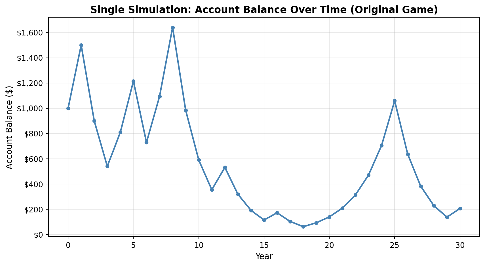
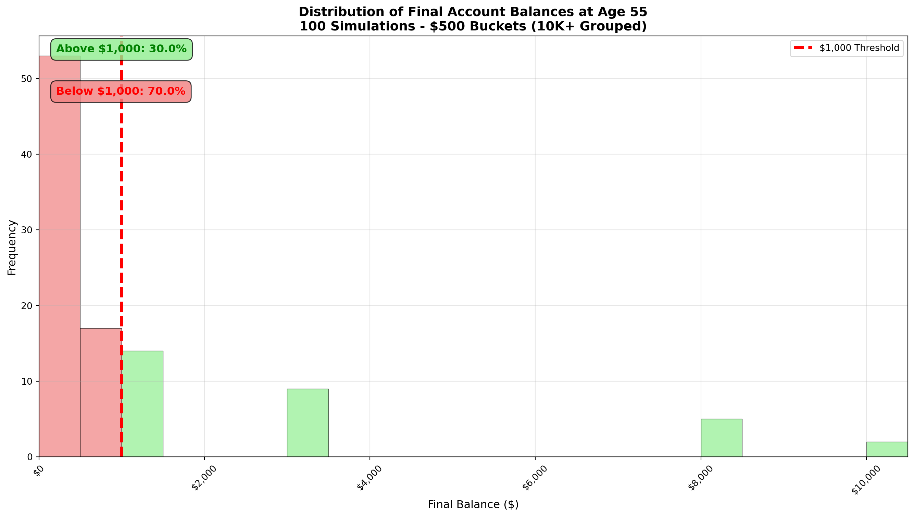
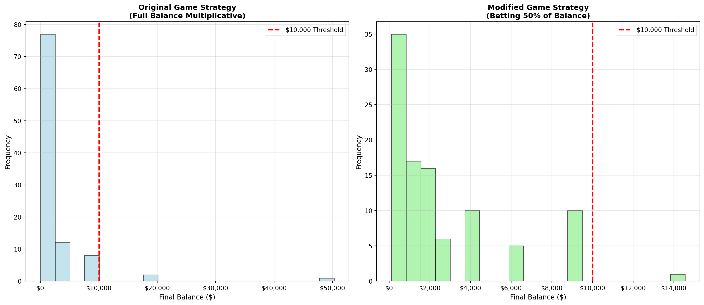

Starting balance: $1,000
Expected value after one flip: $1,050Simulation Challenge
Generative Models and Monte Carlo Simulation
- Expected Value Analysis: What is the “expected value” of your account balance after 1 coin flip for the original game?
The expected value of the account balance after 1 coin flip for the original game is $1000 * (0.5 * 1.5 + 0.5 * 0.6) = $1050. Therefore, the expected value is positive and $1050.
- Expectation vs. Reality: Is the expected value positive or negative? Do you expect your account to be worth more or less than $1,000 based on this result?
The expected value is positive with a gain of $50. Therefore, I expect my account to be worth more than $1,000.
Expected value: $1,050
Is expected value positive? Yes
Expected balance > $1,000? Yes- Single Simulation: Run one simulation showing the dynamics of your account balance over time. Make an object-oriented matplotlib OR ggplot2 plot showing your simulated account balance over time (i.e. as you age). Comment on the results, are you happy?
Answer: Below is a single simulation of the original game (multiplicative: +50% on heads, -40% on tails) over 30 years with an object-oriented Matplotlib plot. The final balance can vary greatly; a single path can end very high or very low, so happiness depends on the particular sequence of flips. Overall, years 10 to mid 20, I am not too happy because my account balance is very low. Moreover, starting with $!,000 at age 0 and ending with $200 at age 30, I lost over $800 which is not a good outcome of the simulation; I would have preferred to see my account balance grow over time.

Final balance after 30 years: $205.89Questions to Answer for 85% Grade on Challenge
- Multiple Simulations: Run 100 simulations modelling the dynamics of your account balance over time. Make an object-oriented matplotlib OR ggplot2 plot showing a probability distribution of the 100 simulatedaccount balance at age 55. Comment on the results, are you happy? Why or why not?
Answer: Below are 100 simulations of the original game over 30 years (age 25 to 55) with a Matplotlib histogram showing the distribution of final balances. I did buckets for every $500 and for any value above $10,000, I placed it in that bucket. I am not very happy with the results because there is a 70% chance that my account balance by age 55 will be below the $1,000 threshold. Therefore, I am not a risky player so there is no point of me trying to play this game since most likely, I will end up losing money. There is a small chance to hit the lottery and end up with over $10,000, but that risk is not worth it statistically.

Summary Statistics (100 simulations):
Mean final balance: $1,718.87
Median final balance: $205.89
Probability above $1,000: 0.300
Maximum balance: $50,266.39
Minimum balance: $0.13Questions to Answer for 95% Grade on Challenge
- Probability Analysis: Based on the 100 simulations above, what is the probability that your account balance will be greater than $1,000 at age 55?
Answer: Based on the 100 simulations from Question 4, the probability of ending above $1,000 at age 55 is 30%. This means that the probability you end up with less than $1,000 will be 70% which is not a great outcome for the player.
Results from 100 simulations:
Simulations ending above $1,000: 30
Simulations ending below $1,000: 70
Probability of ending above $1,000: 0.300 (30.0%)
Probability of ending below $1,000: 0.700 (70.0%)
Answer: The probability that your account balance will be greater than $1,000 at age 55 is 30.0%Questions to Answer for 100% Grade on Challenge
- Strategy Comparison: Run 100 simulations for the modified game strategy shown below in ?@exm-ErgodicityEconomicsExampleModified. What is the probability that your account balance will be greater than $10,000 at age 55? Is this probability higher or lower than the probability in the original game?
Answer: Below are 100 simulations of the modified game strategy (betting 50% of balance each round) compared to the original game. The modified strategy shows different dynamics due to the fixed betting percentage. What I can see from the graph is that the probability that my account balance is greater than $10,000 is lower in the modified game than the original game. There is a 3% chance that I will end up with over $10,000 in original game compared to a 1% chance I will end up with over $10,000 in the modified game. However, if the threshold is $1,000, the probability is much higher in the modified game as we can see in the graph there is higher amount of clusters above $1,000 compared to the original game.

Strategy Comparison Results:
Original Game - Probability above $10,000: 0.030 (3.0%)
Modified Game - Probability above $10,000: 0.010 (1.0%)
Answer: The probability of ending above $10,000 is 1.0% for the modified game.
This is LOWER than the original game (3.0%).